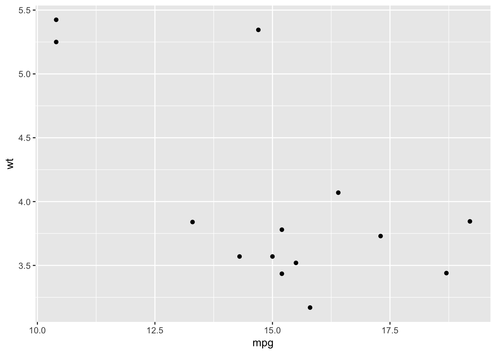
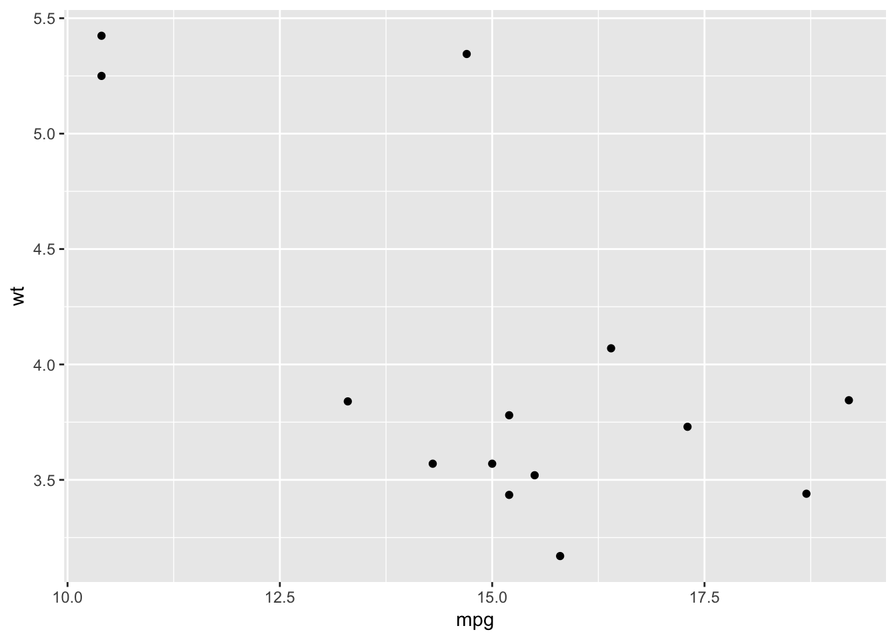
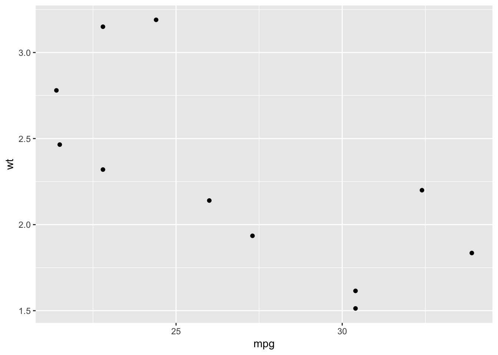

Using map Functions with purrr
Brandon Hurr’s Tutorial
The following code has been adapted from a great presentation Brandon gave at the D-RUG group in Oct 2017. See the original post and content here
Load tidyverse
suppressPackageStartupMessages(library(tidyverse))R Data types
For a nice demonstration of what vectors of different data types look like, try the code below.
# initiate blank vectors of a specific type
# this can be useful when capturing data from for loops
a <- vector("logical", 5)
a## [1] FALSE FALSE FALSE FALSE FALSEb <- vector("integer", 4)
b## [1] 0 0 0 0c <- vector("double", 2) # can also use "numeric"
c## [1] 0 0d <- vector("character", 10)
d## [1] "" "" "" "" "" "" "" "" "" ""e <- vector("complex", 7)
e## [1] 0+0i 0+0i 0+0i 0+0i 0+0i 0+0i 0+0if <- vector("raw", 3)
f## [1] 00 00 00g <- list()
g## list()NA’s in R
NA’s are a common issue in dealing with data from various places (remember spreadsheet lesson?). R deals well with NA’s and even provides different NA’s for different data types.
#what do the NAs look like?
list(NA, NA_integer_, NA_real_, NA_character_, NA_complex_)## [[1]]
## [1] NA
##
## [[2]]
## [1] NA
##
## [[3]]
## [1] NA
##
## [[4]]
## [1] NA
##
## [[5]]
## [1] NAThe NULL element
# NULL is the absence of a vector
a <- c(TRUE, FALSE, TRUE, FALSE, FALSE, NA) # logical vector
a## [1] TRUE FALSE TRUE FALSE FALSE NAa <- NULL
a## NULL# let's use mtcars as example of making a column NULL
head(mtcars)## mpg cyl disp hp drat wt qsec vs am gear carb
## Mazda RX4 21.0 6 160 110 3.90 2.620 16.46 0 1 4 4
## Mazda RX4 Wag 21.0 6 160 110 3.90 2.875 17.02 0 1 4 4
## Datsun 710 22.8 4 108 93 3.85 2.320 18.61 1 1 4 1
## Hornet 4 Drive 21.4 6 258 110 3.08 3.215 19.44 1 0 3 1
## Hornet Sportabout 18.7 8 360 175 3.15 3.440 17.02 0 0 3 2
## Valiant 18.1 6 225 105 2.76 3.460 20.22 1 0 3 1dim(mtcars) # how many rows, cols## [1] 32 11# assign NULL to a given column to remove it
mtcars[1] <- NULL #this gets rid of the mpg column completely
head(mtcars)## cyl disp hp drat wt qsec vs am gear carb
## Mazda RX4 6 160 110 3.90 2.620 16.46 0 1 4 4
## Mazda RX4 Wag 6 160 110 3.90 2.875 17.02 0 1 4 4
## Datsun 710 4 108 93 3.85 2.320 18.61 1 1 4 1
## Hornet 4 Drive 6 258 110 3.08 3.215 19.44 1 0 3 1
## Hornet Sportabout 8 360 175 3.15 3.440 17.02 0 0 3 2
## Valiant 6 225 105 2.76 3.460 20.22 1 0 3 1dim(mtcars) # how many rows, cols## [1] 32 10data(mtcars) # restore full mtcars dataset
dim(mtcars) # how many rows, cols## [1] 32 11Lists in R
Now that we have an idea what different vectors are, let’s talk about how to make them into lists.

Lists can contain anything of any length, and data.frames are a special type of list.
Vectors to Lists: dataframes & tibbles
# let's put actual values into these
a <- c(TRUE, FALSE, TRUE, FALSE, FALSE, NA) # a logical vector 6 items long
b <- c(1:7, NA_integer_) # Integers
c <- c(rnorm(8), NA_real_) # pull doubles from normal distribution
d <- c(LETTERS[1:3], NA_character_) # first 3 capital letters
e <- list(a, b, c, d) #make a list
e # check it## [[1]]
## [1] TRUE FALSE TRUE FALSE FALSE NA
##
## [[2]]
## [1] 1 2 3 4 5 6 7 NA
##
## [[3]]
## [1] -0.2841597 -0.9193220 -0.1162478 1.8173120 0.3706279 0.5202165
## [7] -0.7505320 0.8168998 NA
##
## [[4]]
## [1] "A" "B" "C" NA# Lists can contain anything of any length
## data.frame is a special type of list
## data.frame rows imply association so they need to line up
data.frame(a, b) # uh oh## Error in data.frame(a, b): arguments imply differing number of rows: 6, 8a <- c(TRUE, FALSE, TRUE, FALSE, FALSE, NA, NA, NA) # make it 8 like b
df <- data.frame(a = a, b = b)
df ## a b
## 1 TRUE 1
## 2 FALSE 2
## 3 TRUE 3
## 4 FALSE 4
## 5 FALSE 5
## 6 NA 6
## 7 NA 7
## 8 NA NAtibbles are data.frames with some stricter rules: - slightly more informative printing (not shown well here) - strict behavior around subsetting [ -> tibble [[ vector - does not partially match column names (b/c this can get you into trouble)
as_tibble(df)## # A tibble: 8 x 2
## a b
## <lgl> <int>
## 1 TRUE 1
## 2 FALSE 2
## 3 TRUE 3
## 4 FALSE 4
## 5 FALSE 5
## 6 NA 6
## 7 NA 7
## 8 NA NASee presentation, SLIDE:
Accessing elements inside vectors, lists, dataframes, and tibbles
#atomic vectors
a <- c(TRUE, FALSE, TRUE, FALSE, FALSE, NA) #logic vector
a
a[1]
a[[1]] # does the same thing
a[[[1]]] # nope just stop adding brackets!
# lists
list_example <- list(a = a, b = b, c = c, d = d, e = list(1, "A")) #make a named list
list_example
# single brackets returns a list with that element in it
# can reference by location or by name
list_example[1]
list_example["a"]
# double brackets return a vector
list_example[[2]]
list_example[["b"]]
#stack [['s to peel the onion back
list_example[["e"]] # remove one layer
list_example[["e"]][[2]] # remove the second layer (access e list, and 2 item in that list)
#dolla dolla bills y'all (works like [[, with named vectors)
list_example$c
#same for dataframes
mtcars[1]
mtcars[[1]]
# and for tibbles
tbbl <- tibble(x = 1:3, y = LETTERS[1:3])
tbbl[1]
tbbl["x"]
tbbl[[2]]
tbbl[["y"]]## Error: <text>:7:4: unexpected '['
## 6: a[[1]] # does the same thing
## 7: a[[[
## ^See presentation, SLIDE:
Functions and for Loops
Functions
When should we make a function in R?
#Simple dataframe
df <- data.frame(
a = rnorm(10),
b = rnorm(10),
c = rnorm(10),
d = rnorm(10)
)
# What are we doing here?
df$a <- (df$a - min(df$a, na.rm = TRUE)) /
(max(df$a, na.rm = TRUE) - min(df$a, na.rm = TRUE))
df$b <- (df$b - min(df$b, na.rm = TRUE)) /
(max(df$b, na.rm = TRUE) - min(df$b, na.rm = TRUE))
df$c <- (df$c - min(df$a, na.rm = TRUE)) /
(max(df$c, na.rm = TRUE) - min(df$c, na.rm = TRUE))
df$d <- (df$d - min(df$d, na.rm = TRUE)) /
(max(df$d, na.rm = TRUE) - min(df$d, na.rm = TRUE))Anytime we need to do the same thing 3 or more times, it would probably be a good idea to think about creating a function. Stepping through these pieces, here’s what we’d want to do:
First what is the calculation/task you want to do?
df$d <- (df$d - min(df$d, na.rm = TRUE)) /
(max(df$d, na.rm = TRUE) - min(df$d, na.rm = TRUE))
# exactly as aboveNow pull out the common components:
# pull out what's common
x <- (x - min(x, na.rm = TRUE)) /
(max(x, na.rm = TRUE) - min(x, na.rm = TRUE))Problem is the above isn’t a function yet, it’s just the “anonymous” calculation we want our function to follow. We can simplify even more if we want:
# simplify more and refactor if that makes sense
x <- (x - min(x, na.rm = TRUE)) /
diff(range(x, na.rm = TRUE))And now add the actual function() call!
rescale_0_1 <- function(x) {
(x - min(x, na.rm = TRUE)) /
diff(range(x, na.rm = TRUE))
}Let’s test this function and see what happens. We can test a single vector, and then actually apply our function to each column in our dataset. Use a test dataset that’s simple and we now what it should look like.
rescale_0_1 <- function(x) {
(x - min(x, na.rm = TRUE)) /
diff(range(x, na.rm = TRUE))
}
testvec <- 10:20 # so this should get rescaled from 0 to 1
testvec## [1] 10 11 12 13 14 15 16 17 18 19 20rescale_0_1(testvec) # looks like it worked, it rescaled all values from 0 to 1!## [1] 0.0 0.1 0.2 0.3 0.4 0.5 0.6 0.7 0.8 0.9 1.0df <- data.frame(
a = rnorm(10),
b = rnorm(10),
c = rnorm(10),
d = rnorm(10)
)
rescale_0_1 <- function(x) {
(x - min(x, na.rm = TRUE)) /
diff(range(x, na.rm = TRUE))
}
out <- df # rename df so we can always come back
out$a <- rescale_0_1(df$a)
out$b <- rescale_0_1(df$b)
out$c <- rescale_0_1(df$c)
out$d <- rescale_0_1(df$d)
out## a b c d
## 1 0.6763377 0.60223401 0.4980153 0.576331081
## 2 0.7058622 0.79674954 0.0000000 0.234580934
## 3 1.0000000 0.49984406 0.3915857 0.529072153
## 4 0.0000000 0.00000000 0.5573102 0.629626055
## 5 0.5557727 0.37237145 0.4430155 0.005834701
## 6 0.2235998 0.14092566 0.5639649 0.043782717
## 7 0.6456459 0.06792785 0.1542186 1.000000000
## 8 0.8764245 1.00000000 1.0000000 0.205334672
## 9 0.3918212 0.74413690 0.5420949 0.000000000
## 10 0.1145516 0.61725294 0.8145101 0.581662975for Loops to apply a function
Reduce iteration with a for loop, which takes a vector or list, and interates or steps through each piece of that vector/list, does something and returns values/data.
out <- df #make a copy to store scaled data
for (i in 1:ncol(df)) { # loop through each element
out[i] <- rescale_0_1(df[[i]]) #apply function and store it to out
}
out## a b c d
## 1 0.6763377 0.60223401 0.4980153 0.576331081
## 2 0.7058622 0.79674954 0.0000000 0.234580934
## 3 1.0000000 0.49984406 0.3915857 0.529072153
## 4 0.0000000 0.00000000 0.5573102 0.629626055
## 5 0.5557727 0.37237145 0.4430155 0.005834701
## 6 0.2235998 0.14092566 0.5639649 0.043782717
## 7 0.6456459 0.06792785 0.1542186 1.000000000
## 8 0.8764245 1.00000000 1.0000000 0.205334672
## 9 0.3918212 0.74413690 0.5420949 0.000000000
## 10 0.1145516 0.61725294 0.8145101 0.581662975Using seq_along
Handy command that sequences along a list for you, so you don’t have to specify columns or rows, or series of numbers.
out <- df #make a copy to store scaled data
for (i in seq_along(df)) {
out[i] <- rescale_0_1(df[[i]])
}
out## a b c d
## 1 0.6763377 0.60223401 0.4980153 0.576331081
## 2 0.7058622 0.79674954 0.0000000 0.234580934
## 3 1.0000000 0.49984406 0.3915857 0.529072153
## 4 0.0000000 0.00000000 0.5573102 0.629626055
## 5 0.5557727 0.37237145 0.4430155 0.005834701
## 6 0.2235998 0.14092566 0.5639649 0.043782717
## 7 0.6456459 0.06792785 0.1542186 1.000000000
## 8 0.8764245 1.00000000 1.0000000 0.205334672
## 9 0.3918212 0.74413690 0.5420949 0.000000000
## 10 0.1145516 0.61725294 0.8145101 0.581662975map and apply Functions
There are a family of functions called apply (mapply, sapply, lapply, vapply) which essentially take a list of something and apply a function or operation on each item in that list. These are base functions in R, but a newer set of functions (which do the same thing & more) have been written in R, called the map functions. Let’s see how they migth work.
apply
df_app1 <- apply(df, MARGIN = 2, function(x) rescale_0_1(x)) # iterate over the columns in df
class(df_app1) # returns a matrix## [1] "matrix"df_app2 <- sapply(df, function(x) rescale_0_1(x)) # same as above but defaults to colsOkay so apply returns a matrix. What about map?
map
df_map1<- map(df, function(x) rescale_0_1(x)) #map over the columns in df
class(df_map1) # returns a list! Keeps same format that was input## [1] "list"df_map2 <- map_df(df, rescale_0_1) # returns a dataframe!Let’s look at another more simple example.
Specifying Outputs with map
Another set of examples below will help us understand how map makes it easy to get different data classes (matrix,list, dataframe) back out. The default map function takes a list and returns a list, but there are various options that allow you to specify what you want.
This example creates a list containing two integer vectors. Let’s say we want the mean of each one:
l = list(a=1:10, b = 10:100)
map(l, function(x) mean(x, na.rm = TRUE)) # and this is returning a list (list in, list out)## $a
## [1] 5.5
##
## $b
## [1] 55Get numeric double type back
Specify and you get a vector back instead of a list
l = list(a=1:10, b = 10:100)
map_dbl(l, function(x) mean(x, na.rm = TRUE)) # this is a numeric vector## a b
## 5.5 55.0Get character back
Maybe not so useful, but demonstrates the point.
map_chr(l, function(x) mean(x, na.rm = TRUE))## a b
## "5.500000" "55.000000"Use Error Messages: Type-strict functions
So if you have or try to use the wrong type of data, the function won’t run.
l = list(a=1:10, b = 10:100)
map_lgl(l, function(x) mean(x, na.rm = TRUE))## Error: Can't coerce element 1 from a double to a logicalMore map Examples
map Use Case #1: Read in files
Based upon this tutorial http://data.library.virginia.edu/getting-started-with-the-purrr-package-in-r/
# this will work if you clone the github repository
fileloc <- file.path(getwd(), "stocks")
#create a list of files to read in that end in csv
files <- list.files(fileloc, pattern = "csv$", full.names = TRUE)
#this reads in each csv independently into a list
dat2 <- map(files, read_csv)
dat2## list()Let’s make it a function
fileloc <- file.path(getwd(), "stocks")
read_folder <- function(folder) {
# get files that end with csv or CSV
files <- list.files(folder, pattern = "(csv|CSV)$", full.names = TRUE)
#this reads in each csv independently into a list
map(files, read_csv) # last thing is returned
}
read_folder(fileloc)## list()What if you want to change the type of file you’re reading?
fileloc <- file.path(getwd(), "stocks")
read_folder <- function(folder, pattern, read_fun) {
# get files that end with csv or CSV
files <- list.files(folder, pattern = pattern, full.names = TRUE)
#this reads in each csv independently into a list
map(files, read_fun)
}
read_folder(folder = fileloc, pattern = "(csv|CSV)$", read_fun = read_csv)## list()# OR more succinctly
# read_folder(fileloc, "(csv|CSV)$", read_csv)Combine Files and Label By Filenames
If there are multiple files but all have same structure (same number of columns/column types), we can read in separately and then combine. But add the filename of each dataset as a new column variable.
fileloc <- file.path(getwd(), "stocks")
# This function reads a file and appends a column called "name" for ID
read_fun <- function(file, FUN) {
dat <- FUN(file) # read in file
dat$name <- tools::file_path_sans_ext(basename(file)) #record the filename for later grouping
dat #bring data back
}
# This function reads a folder for files of given pattern
# then applies the given read function to read them in read_fun
read_files_bind <- function(folder, pattern, FUN) {
# get files that end with csv or CSV
files <- list.files(folder, pattern = pattern, full.names = TRUE)
map_dfr(files, read_fun, FUN)
}
# Read everything in at once and bind it all together
read_files_bind(folder = fileloc, pattern = "(csv|CSV)$", FUN = read_csv)## # A tibble: 0 x 0Lists & List columns
Ok, so we can get data into our environment in a list, but what then? There are a number of ways to deal with these data, or to deal with lists within dataframes…called list columns.
tidyr::nest() embeds tibbles in a column
See how to group by something and then create a list-columns that hold each dataframe for that group.
cars_nested <-
mtcars %>% # motortrend car dataset
group_by(cyl) %>% # group by cylinder
nest(.key = "data") # nest data by cyl, default key is "data"
cars_nested## # A tibble: 3 x 2
## cyl data
## <dbl> <list>
## 1 6 <tibble [7 x 10]>
## 2 4 <tibble [11 x 10]>
## 3 8 <tibble [14 x 10]>Interacting with list-data using map
Use map!. Let’s make a linear model for each subset, pull out the coefficients with broom, and plot them.
library(broom)
mtc_modeled <-
mtcars %>% # motortrend car dataset
group_by(cyl) %>% # group by cylinder
nest(.key = "data") %>% # nest data by cyl, default key is "data"
mutate(model = map(data, ~ lm(mpg ~ disp, data = .x))) %>% # make models
mutate(coeff = map(model, tidy)) %>% #pull out coefficients
mutate(slope = map_dbl(coeff, ~ pull(.x, estimate)[2])) %>% # pull slope from coefficients
mutate(intercept = map_dbl(coeff, ~ pull(.x, estimate)[1])) # pull intercept from coefficients
ggplot() +
# plot the original data
geom_point(data = mtcars, aes(x = disp, y = mpg, color = as.factor(cyl))) +
# plot the models
geom_abline(data = mtc_modeled, aes(slope = slope, intercept = intercept, color = as.factor(cyl)))
See presentation, SLIDE:
Iterating over more than one list with map2 and pmap
n = list(5,10,20)
mu = list(50,30,10)
sd = list(10,5,1)
# how does it look as we go from map to map2 to pmap?
map(n, rnorm)## [[1]]
## [1] -0.5050435 2.1577198 -0.5997976 -0.6945467 0.2239254
##
## [[2]]
## [1] -1.1562233 0.4224185 -1.3247553 0.1410843 -0.5360480 -0.3116061
## [7] 1.5561096 -0.4480333 0.3211235 -1.2301722
##
## [[3]]
## [1] -1.32405869 1.26124227 1.31923172 -0.08075376 -0.50508981
## [6] -0.05215359 0.62886063 2.18000240 -0.06901731 1.54486360
## [11] 1.32145202 0.32215158 1.53095512 -0.42123969 -1.15882102
## [16] -1.84536829 1.15732529 -2.12354988 -1.19603152 1.64219199map2(n, mu, rnorm)## [[1]]
## [1] 50.88365 50.52488 48.81534 52.65579 48.95209
##
## [[2]]
## [1] 28.98888 30.66892 30.12918 29.57742 28.85974 28.70628 29.40530
## [8] 28.49919 30.01586 30.54017
##
## [[3]]
## [1] 8.452708 10.849653 10.896013 10.138691 8.380672 10.548398 10.195282
## [8] 9.193502 9.891376 9.749053 11.699347 9.655701 10.067772 9.349430
## [15] 9.512361 10.303151 9.758026 9.518266 9.008197 9.719351pmap(list(n, mu, sd), rnorm)## [[1]]
## [1] 56.33017 37.60182 67.64314 49.76320 51.99920
##
## [[2]]
## [1] 36.73596 30.18037 34.12291 21.48664 32.40475 42.41775 32.00682
## [8] 31.07589 20.92144 25.44130
##
## [[3]]
## [1] 9.950955 9.594613 11.130382 10.815465 10.076418 11.453747 10.374121
## [8] 9.829096 9.497787 10.543522 9.494814 10.786796 10.300949 11.310224
## [15] 10.798434 10.850860 9.556432 9.553225 10.013305 8.563854#technically, pmap can do it all
pmap(list(n), rnorm)## [[1]]
## [1] -0.6292596 0.2435218 1.0583622 0.8313488 0.1052118
##
## [[2]]
## [1] -1.74171309 0.64524699 0.09710422 -0.07673369 0.99195068
## [6] -0.85925076 -0.28157969 2.06624727 -0.61155298 0.31561282
##
## [[3]]
## [1] 0.66029338 -1.72220241 -2.13462605 0.06894560 0.86782174
## [6] -2.29004418 -0.15019029 -0.26878179 1.79133204 0.67226804
## [11] -0.20930114 0.01218251 1.53411686 0.07729182 0.07843753
## [16] -0.77926107 0.16655967 0.26532457 0.89078071 -0.46788837pmap(list(n, mu), rnorm)## [[1]]
## [1] 50.75837 49.35826 50.62767 50.24833 49.29992
##
## [[2]]
## [1] 29.43260 29.73861 28.93611 29.89363 30.77110 32.74740 29.91607
## [8] 30.54357 30.75286 29.19133
##
## [[3]]
## [1] 11.001120 10.456053 8.565750 9.734695 10.641769 9.584979 9.540424
## [8] 9.207506 8.841461 10.710890 11.267602 9.856849 9.484971 11.482891
## [15] 9.837411 10.041709 10.483040 8.819873 9.336426 9.365350# formula interface
map(n, ~rnorm(.))## [[1]]
## [1] -0.7019630 0.5768504 -2.1130804 0.2609097 1.1471272
##
## [[2]]
## [1] 0.01479365 -0.31173924 -0.95619611 0.47341376 -1.51386408
## [6] 0.16428100 -0.87086522 1.59332899 0.64659752 0.35736969
##
## [[3]]
## [1] 0.10239306 -0.67526683 0.97208502 0.75586993 -0.42828562
## [6] -0.71392476 -0.19038407 0.39986481 -0.97784491 0.18373691
## [11] -2.15031053 -0.62296653 -0.76543932 0.46430942 0.52228217
## [16] 0.00979376 -0.44052620 1.19948953 -0.11746849 0.03820979map2(n, mu, ~ rnorm(.x, .y))## [[1]]
## [1] 51.19481 50.34396 49.67093 51.67086 49.08194
##
## [[2]]
## [1] 29.91219 31.32029 31.73079 32.16260 29.68427 29.42490 28.59364
## [8] 32.26786 29.22915 30.38032
##
## [[3]]
## [1] 10.605137 11.019674 10.474943 7.814054 10.933192 10.475435 10.390282
## [8] 9.272672 10.986556 11.423984 10.484731 10.349236 10.860124 10.404611
## [15] 10.367045 8.480801 11.549803 10.499881 10.460873 12.076710pmap(list(n, mu, sd), ~rnorm(..1, ..2, ..3)) # ..4 and so on for as many as you need## [[1]]
## [1] 46.92349 59.52371 55.32788 49.04452 48.57937
##
## [[2]]
## [1] 24.08487 32.72659 17.09072 33.89450 31.46470 29.56646 22.66820
## [8] 24.58410 35.28869 28.19840
##
## [[3]]
## [1] 10.350594 10.028258 10.473048 9.080845 9.624177 8.187166 10.288600
## [8] 9.810377 10.017860 10.650430 10.310255 11.668357 10.672615 9.722482
## [15] 9.853974 11.701432 10.471358 10.581700 10.666021 9.221098# CAUTION: position matters with map2 & pmap
map2(n, mu, rnorm)## [[1]]
## [1] 51.16332 48.03546 50.76917 52.25977 49.52273
##
## [[2]]
## [1] 29.89742 30.36870 29.46457 30.50660 29.84944 30.90424 32.24204
## [8] 28.80488 29.58148 30.79825
##
## [[3]]
## [1] 10.498172 10.119560 9.632797 10.262331 10.262704 10.640739 10.307090
## [8] 9.966871 8.625249 10.627965 10.002144 10.284378 8.998221 9.382778
## [15] 10.828194 9.915181 9.565280 8.795165 8.979313 9.028771map2(mu, n, rnorm)## [[1]]
## [1] 4.839087 6.204687 5.066746 4.117542 4.980080 5.328016 4.069371
## [8] 3.868585 6.086230 5.514242 5.293168 4.437345 5.207143 6.228077
## [15] 4.569987 6.331908 4.236733 6.232319 5.609059 4.177460 4.952352
## [22] 5.170678 3.774929 5.387333 5.490668 7.239126 5.892212 5.798933
## [29] 6.935443 5.394250 5.632521 5.102591 6.010211 6.214678 5.500871
## [36] 4.090532 2.802791 5.438545 3.970585 5.713078 6.028269 4.429367
## [43] 4.565991 6.005317 6.203545 6.496183 4.843402 4.063969 5.352539
## [50] 3.713811
##
## [[2]]
## [1] 9.727477 10.156915 9.118187 9.878102 9.144749 8.994271 9.086048
## [8] 7.921766 9.859353 11.299638 9.970631 7.763378 10.545030 10.830842
## [15] 9.502421 9.398973 9.487802 9.995068 9.902852 9.975965 9.872610
## [22] 9.868114 10.453742 8.593664 10.210931 10.752336 10.138380 10.159680
## [29] 10.228435 8.837216
##
## [[3]]
## [1] 20.85466 19.75790 17.98400 19.77231 20.22417 19.26318 19.15329
## [8] 19.88854 19.68840 18.57968pmap(list(n, mu, sd), rnorm)## [[1]]
## [1] 25.33061 54.84716 40.62028 83.30733 48.37055
##
## [[2]]
## [1] 31.10228 34.38105 19.25519 28.83124 20.00754 23.82610 34.23152
## [8] 29.76753 32.01821 33.83727
##
## [[3]]
## [1] 10.867102 8.745419 9.842202 9.487683 10.413021 10.564256 10.726066
## [8] 9.584898 10.041615 10.224292 10.786409 9.576637 9.632466 8.232980
## [15] 9.816462 10.834872 9.412799 9.641068 12.114129 10.645411pmap(list(mu, n, sd), rnorm)## [[1]]
## [1] 1.8768004 16.8544828 10.5379896 4.4624606 26.2746303
## [6] 3.1229352 5.9875784 24.1037815 21.2145572 25.9306799
## [11] -1.9223593 -17.8719811 -11.5560167 10.6950942 0.2877741
## [16] 4.6679032 8.7736707 16.5771800 18.9865000 26.1850393
## [21] -5.8745987 17.1603339 11.7722530 -2.2637691 6.1284394
## [26] 5.6521357 -1.3062721 10.1885546 -3.0294450 -1.8162320
## [31] 4.6283728 2.1272568 -5.2602717 18.9835918 13.3669025
## [36] 1.7010374 10.3480226 -7.0725319 11.2876732 10.7616473
## [41] 17.3622388 9.7553964 -10.4714749 5.5546880 11.8006209
## [46] -8.5020157 7.4510244 1.9265146 12.3136457 7.0138181
##
## [[2]]
## [1] 2.122686 10.117694 14.008206 -2.778137 7.365447 3.435706 14.004307
## [8] 13.565504 15.159574 18.409042 8.868448 9.010355 15.218511 7.791313
## [15] 1.816855 11.057813 7.675841 6.688214 9.335232 3.391491 10.383464
## [22] 8.075046 14.736532 10.108431 7.708530 11.144311 3.017962 14.621471
## [29] 10.331080 14.014454
##
## [[3]]
## [1] 19.93947 20.08933 20.40131 19.11144 21.44917 20.20551 19.94388
## [8] 19.36014 20.71778 19.93550# if you need non-default ordering, specify with full function call
map2(mu, n, function(x, y) rnorm(y, x))## [[1]]
## [1] 50.13243 50.03472 50.28165 50.91928 48.95728
##
## [[2]]
## [1] 29.78638 31.77795 31.46094 29.63545 29.38684 30.49591 30.24564
## [8] 29.87210 28.74956 31.63435
##
## [[3]]
## [1] 10.975436 11.084078 9.640613 8.984480 11.335521 9.844438 10.926608
## [8] 10.889246 10.145117 9.181353 8.763177 12.317226 10.050724 10.290836
## [15] 8.188710 8.854852 11.280873 8.640530 11.884971 8.631398# or using the formula interface
map2(mu, n, ~ rnorm(.y, .x))## [[1]]
## [1] 50.54394 48.76197 51.87713 48.55419 49.84663
##
## [[2]]
## [1] 29.05431 30.31240 30.27472 29.68456 29.61563 28.57106 30.96342
## [8] 30.61378 29.63145 28.19296
##
## [[3]]
## [1] 11.355438 10.445680 10.164795 10.029978 9.323887 11.136050 12.169332
## [8] 8.910981 8.897274 11.302636 7.221674 10.341312 9.776450 9.801228
## [15] 11.633303 8.130378 9.749911 8.629241 11.451262 7.862090# pmap you can name your list to get around positional ordering
pmap(list(mean=mu, n=n, sd=sd), rnorm)## [[1]]
## [1] 44.22739 52.36449 60.99857 55.61283 73.03627
##
## [[2]]
## [1] 40.10448 29.71061 32.21047 23.48334 29.82390 34.62127 28.19586
## [8] 32.33586 28.99382 29.97326
##
## [[3]]
## [1] 9.466997 9.484585 9.915089 10.435933 10.997954 8.836811 11.680894
## [8] 11.217121 9.972561 9.708454 10.972628 9.760293 9.098282 9.368826
## [15] 8.374025 7.850504 12.112628 10.269080 9.480528 9.984266# OR you can specify with a full function call
pmap(list(mu, n, sd), function(mu, n, sd) rnorm(n, mu, sd))## [[1]]
## [1] 48.48747 50.88231 57.78903 53.86720 53.47953
##
## [[2]]
## [1] 20.50214 29.71159 27.64348 33.17366 25.19628 25.97588 27.52027
## [8] 27.90762 26.72508 36.97743
##
## [[3]]
## [1] 13.093697 11.900826 9.604681 9.413298 10.461765 10.097209 10.676026
## [8] 9.251229 11.025553 9.303405 8.722865 9.907576 11.847464 9.070371
## [15] 8.969200 8.680486 9.915794 10.773902 9.840053 10.863308# OR with the formula interface
pmap(list(mu, n, sd), ~ rnorm(..2, ..1, ..3))## [[1]]
## [1] 59.69371 56.14129 74.96919 61.55265 68.74872
##
## [[2]]
## [1] 28.81221 27.73610 26.41624 32.44467 34.17101 34.62932 34.71578
## [8] 27.19963 33.43850 31.09913
##
## [[3]]
## [1] 8.994763 10.373101 10.469392 10.064626 11.004815 9.626171 10.936109
## [8] 10.844989 11.092658 10.629245 11.037235 10.870617 9.372592 10.435729
## [15] 10.239407 8.743880 10.223570 10.504590 12.117015 9.182508See presentation, SLIDE:
walk/walk2/pwalk are used to output side-effects
asdf <- list(a = LETTERS[1:10], b = 1:15, c = FALSE)
# we just want to print each element of this list
walk(asdf, print)## [1] "A" "B" "C" "D" "E" "F" "G" "H" "I" "J"
## [1] 1 2 3 4 5 6 7 8 9 10 11 12 13 14 15
## [1] FALSEOutputting Plots with map Functions
# make a simple plotting function
plot_points <- function(t) ggplot(t, aes(mpg, wt)) + geom_point()
mtcars %>% # motortrend car dataset
group_by(cyl) %>% # group by cylinder
nest(.key = "data") %>% # nest by cylinder
mutate(plot = map(data, plot_points)) %>% # we made a graph for each subset
pull(plot) %>% #pull the plots out as a list
walk(., print) # print them
 

Save Plots from walk with walk2/pwalk
# make a simple plotting function
plot_points <- function(t) ggplot(t, aes(mpg, wt)) + geom_point()
mtc_plot_n_save <-
mtcars %>% # motortrend car dataset
group_by(cyl) %>% # group by cylinder
nest(.key = "data") %>% # nest by cylinder
mutate(plot = map(data, plot_points)) %>% # we made a graph for each subset
mutate(filepath = map_chr(cyl, ~ file.path("figures", paste0(.x, ".png")))) #make the save paths
walk2(mtc_plot_n_save$plot, mtc_plot_n_save$filepath, ~ ggsave(.y, .x)) # save them out## Saving 7 x 5 in image
## Saving 7 x 5 in image
## Saving 7 x 5 in imageThat is great! Ok, let’s make this a bit fancier. With pwalk we can have a bunch of different lists of things that get mapped…not just 1 or 2.
# make a simple plotting function
plot_points <- function(t) ggplot(t, aes(mpg, wt)) + geom_point()
#function that prints cylinder info, ggplot, and table
print_func <-
function(info, plot, table, filepath) {
print(paste0("This is for ", info, " cylinders./n"))
print(plot)
ggsave(filepath)
print(table)
}
mtc_plot_n_save <-
mtcars %>% # motortrend car dataset
group_by(cyl) %>% # group by cylinder
nest(.key = "data") %>% # nest by cylinder
mutate(plot = map(data, plot_points)) %>% # we made a graph for each subset
mutate(filepath = map_chr(cyl, ~ file.path("figures", paste0(.x, ".png")))) # make the save paths
# print all the info
pwalk(list(info = mtc_plot_n_save$cyl, plot = mtc_plot_n_save$plot, table = mtc_plot_n_save$data, filepath = mtc_plot_n_save$filepath), print_func) ## [1] "This is for 6 cylinders./n"## Saving 7 x 5 in image
## # A tibble: 7 x 10
## mpg disp hp drat wt qsec vs am gear carb
## <dbl> <dbl> <dbl> <dbl> <dbl> <dbl> <dbl> <dbl> <dbl> <dbl>
## 1 21.0 160.0 110 3.90 2.620 16.46 0 1 4 4
## 2 21.0 160.0 110 3.90 2.875 17.02 0 1 4 4
## 3 21.4 258.0 110 3.08 3.215 19.44 1 0 3 1
## 4 18.1 225.0 105 2.76 3.460 20.22 1 0 3 1
## 5 19.2 167.6 123 3.92 3.440 18.30 1 0 4 4
## 6 17.8 167.6 123 3.92 3.440 18.90 1 0 4 4
## 7 19.7 145.0 175 3.62 2.770 15.50 0 1 5 6
## [1] "This is for 4 cylinders./n"## Saving 7 x 5 in image
## # A tibble: 11 x 10
## mpg disp hp drat wt qsec vs am gear carb
## <dbl> <dbl> <dbl> <dbl> <dbl> <dbl> <dbl> <dbl> <dbl> <dbl>
## 1 22.8 108.0 93 3.85 2.320 18.61 1 1 4 1
## 2 24.4 146.7 62 3.69 3.190 20.00 1 0 4 2
## 3 22.8 140.8 95 3.92 3.150 22.90 1 0 4 2
## 4 32.4 78.7 66 4.08 2.200 19.47 1 1 4 1
## 5 30.4 75.7 52 4.93 1.615 18.52 1 1 4 2
## 6 33.9 71.1 65 4.22 1.835 19.90 1 1 4 1
## 7 21.5 120.1 97 3.70 2.465 20.01 1 0 3 1
## 8 27.3 79.0 66 4.08 1.935 18.90 1 1 4 1
## 9 26.0 120.3 91 4.43 2.140 16.70 0 1 5 2
## 10 30.4 95.1 113 3.77 1.513 16.90 1 1 5 2
## 11 21.4 121.0 109 4.11 2.780 18.60 1 1 4 2
## [1] "This is for 8 cylinders./n"## Saving 7 x 5 in image
## # A tibble: 14 x 10
## mpg disp hp drat wt qsec vs am gear carb
## <dbl> <dbl> <dbl> <dbl> <dbl> <dbl> <dbl> <dbl> <dbl> <dbl>
## 1 18.7 360.0 175 3.15 3.440 17.02 0 0 3 2
## 2 14.3 360.0 245 3.21 3.570 15.84 0 0 3 4
## 3 16.4 275.8 180 3.07 4.070 17.40 0 0 3 3
## 4 17.3 275.8 180 3.07 3.730 17.60 0 0 3 3
## 5 15.2 275.8 180 3.07 3.780 18.00 0 0 3 3
## 6 10.4 472.0 205 2.93 5.250 17.98 0 0 3 4
## 7 10.4 460.0 215 3.00 5.424 17.82 0 0 3 4
## 8 14.7 440.0 230 3.23 5.345 17.42 0 0 3 4
## 9 15.5 318.0 150 2.76 3.520 16.87 0 0 3 2
## 10 15.2 304.0 150 3.15 3.435 17.30 0 0 3 2
## 11 13.3 350.0 245 3.73 3.840 15.41 0 0 3 4
## 12 19.2 400.0 175 3.08 3.845 17.05 0 0 3 2
## 13 15.8 351.0 264 4.22 3.170 14.50 0 1 5 4
## 14 15.0 301.0 335 3.54 3.570 14.60 0 1 5 8